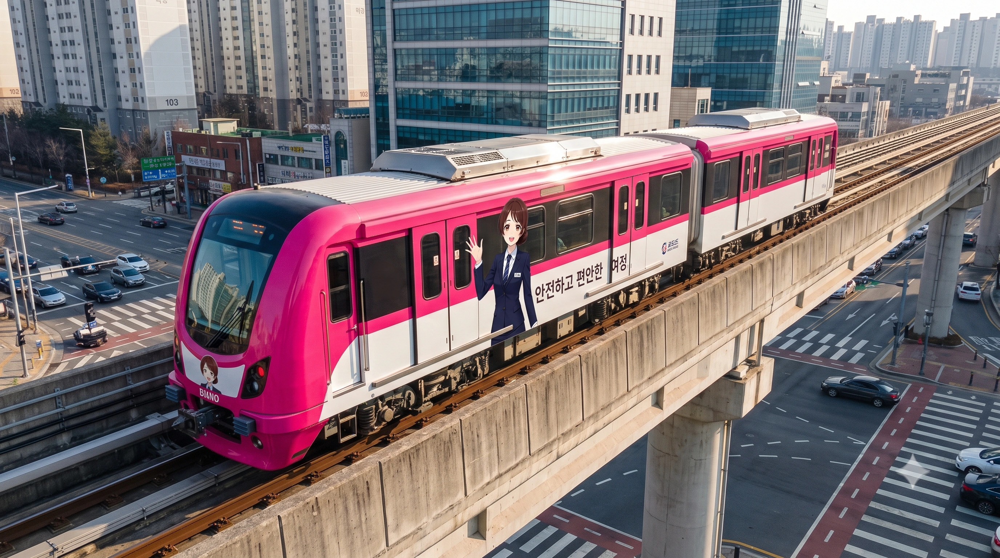
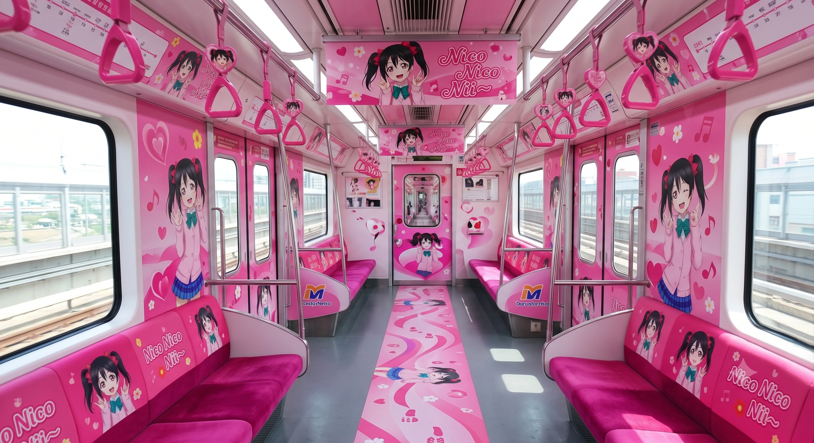
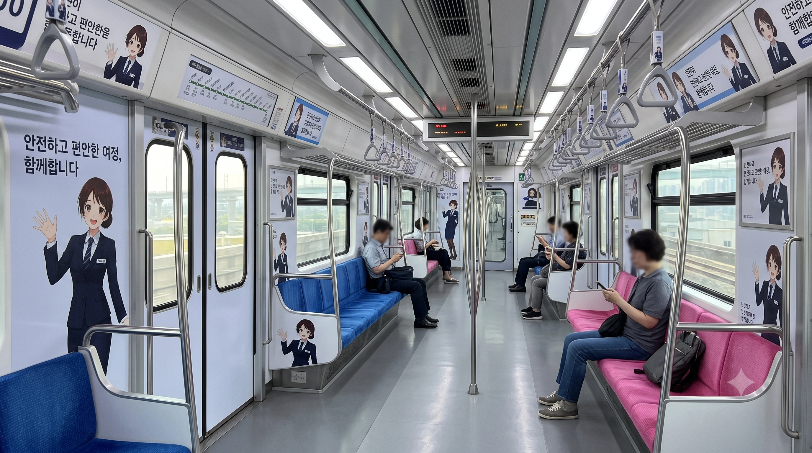

"덕주시를 누비는 핫핑크색 날개"
덕산구와 조전구를 이어주는 지옥철 롤러코스터
덕주도시철도공사가 덕주 도시철도 1호선에서 운용 중인 경전철 차량이다. K-AGT 기반의 고무차륜 열차이며, 차대 번호 식별 부호는 'D'(Deokju)를 사용한다.
2023년 7월 7일 덕주 1호선 개통과 함께 도입되었다. 당초 버스 노선 개편만으로 넘어가려 했으나, 조전구 신도시 개발과 원명읍 일대의 폭발적인 팽창으로 교통 체증이 지옥도를 연상케 하자 전격적으로 투입된 구세주 같은 열차다. 덕주시의 구도심인 덕산구부터 덕남대, 덕남도청, 조전구청 등 주요 인프라를 'ㄷ'자 형태로 모조리 훑고 지나가기 때문에 3량 1편성이라는 콤팩트한 크기가 원망스러울 정도로 매일 출퇴근 수요가 터져나간다.

▲ 고가 선로를 시원하게 질주하는 덕주 1호선 전동차. 눈이 시리도록 강렬한 핫핑크 도색과 이덕희 역무원 래핑이 압권이다.
모든 차량은 종착역인 신도역 인근에 위치한 원명차량사업소에서 일괄 관리한다.


1000호대가 기획될 당시, 강렬한 핫핑크(#FF4F91) 색상 때문에 "눈이 너무 아프다", "촌스럽다", "도시가 무슨 장난감이냐"는 중장년층의 항의와 민원이 덕주시청을 마비시킬 정도로 빗발쳤다. 그런데 철도 동호인들에 의해 이 색상 코드가 애니메이션 《러브 라이브!》의 인기 캐릭터 '야자와 니코'의 공식 이미지 컬러와 소름 돋게 100% 일치한다는 사실이 밝혀졌다. 더욱 소름 돋는 것은, 덕주시의 한자(德州)와 니코의 성우 '토쿠이 소라'의 성씨(德井)에 같은 '큰 덕(德)' 자가 들어간다는 점이었다. 덕주시는 이 우주의 섭리(?)를 핑계 삼아 개통 기념으로 일본 측과 공식 콜라보레이션을 성사시켰고, D1001편성을 아예 '니코 트레인(Nico Train)'으로 풀 래핑하여 운행해 버렸다. 성우가 직접 녹음한 스페셜 안내방송까지 송출되자, 촌스럽다는 민원은 쏙 들어가고 전국 서브컬처 팬들과 일본 관광객들이 몰려들며 덕주시는 순식간에 '오덕주'라는 칭호와 함께 엄청난 흑자를 기록하는 기적을 낳았다.
니코 트레인의 엄청난 성공에 고무된 덕주도시철도공사는 아예 1호선 전담 공식 마스코트를 런칭하기로 결심했다. 그렇게 2026년 5월 탄생한 캐릭터가 바로 '이덕희(Lee Deok-hee)'다. 그녀는 1호선 상징색과 완벽히 일치하는 야자와 니코를 너무 동경한 나머지 덕주도시철도공사에 입사한 진성 '럽순이'이자, 덕남대 철도경영학과 재학생(만 22세)이라는 신선한 설정으로 등장했다. 본인의 생일마저 덕주 1호선 개통일과 동일한 7월 7일이라 스스로를 '럭키 세븐의 화신'이라 부르며, 단정하게 뒤로 묶은 로우번 헤어에 네이비블루 투버튼 정장 자켓을 입은 전형적인 'K-직장인 역무원'의 비주얼로 팬들을 열광시켰다. 1000호대 전동차 내외부를 도배한 그녀의 일러스트 라펠에는 '차장' 명찰이 달려있는데, 이는 "진짜 1호선 차장님이 일 잘한다며 기분 내보라고 빌려준 걸 그대로 달고 프로필 사진을 박제해 버렸다"는 웃지 못할 뻔뻔한 설정의 산물이다.
1000호대 차내에서 흘러나오는 이덕희의 안내방송은 한·일 양국 성우들의 미친 필모그래피가 융합되어 대환장 밈을 양산하고 있다. 한국판 성우인 박시윤은 원신 '나히다' 역을 맡은 덕에, 덕희가 뼈해장국에 다대기를 팍팍 풀 때마다 팬들은 "지혜의 신께서 덕산구 국밥에 깨달음을 얻으셨다"고 환호한다. 게다가 진상 승객이 나타나면 에반게리온 아스카 톤으로 "너 바보야?! (안타 바카?!)"라고 자비 없이 샤우팅을 꽂아 넣는다. 반면 일본판 성우인 신도 아마네(실제로 러브라이브 시리즈 카츠라기 이즈미 역)는, 평소엔 럽순이 텐션으로 승객을 맞이하다가도 진상에게 시달려 멘탈이 바닥나면 뱅드림!의 '쿠라타 마시로' 톤으로 완전히 돌변한다. "덕주역... 너무 무서워... 환승객이 다 날 쳐다봐... 무리무리... 집으로 돌아갈래..."라며 개찰구 구석에서 바들바들 떠는 극단적 갭모에 안내방송은 1000호대를 탑승하는 오타쿠들의 심장을 완벽하게 폭행하고 있다.
2026년 5월, 이덕희 캐릭터가 한창 1000호대 전동차에 래핑되며 인기를 끌 무렵, 당시 도지사였던 석형준은 이를 정치적으로 트집 잡아 1호선 전체를 뒤흔드는 만행을 저질렀다. 그는 덕주도시철도공사 사장을 호출해 "어디서 천박한 만화 쪼가리로 세금을 낭비하냐! 적자투성이 1호선 당장 철거해 버려!"라며 폭언을 퍼부었다. 하지만 덕주 1호선은 인구 50만 규모 경전철치고는 이례적으로 흑자이거나 적자 폭이 극히 적은 알짜배기 '효자 노선'이었기에, 석형준의 발언은 사실관계조차 틀려먹은 멍청한 억지였다. 앙심을 품은 석형준은 도비 지원 예산을 일방적으로 전액 삭감해 버리는 옹졸한 보복을 가했으나, 한 달 뒤 지방선거에서 29.2%라는 굴욕적인 득표율로 참패하며 쫓겨났다. 이후 도정을 탈환한 김영산 신임 도지사가 취임 직후 삭감된 예산을 즉각 원상복구 시키면서, 1000호대와 이덕희 래핑 열차는 화려하게 부활하여 선로를 달릴 수 있게 되었다.
이덕희는 증조부가 덕산구 화주동 구도심에 정착한 화교 출신인 탓에 '1/8 대만계 혼혈'이라는 독특한 설정을 갖고 있다. 이를 빌미로 2024년 총선에서 5.2% 득표율로 멸망한 혐오 빌런 윤재훈이 덕주역 광장에 확성기를 들고 나타나 "이덕희는 공산당이 1호선을 점령하려는 암호다!"라며 난동을 피웠다. 당시 현장에 있던 이덕희(역무원)가 깜짝 놀라 "哎야(아이야)!! 你疯了吗? (미쳤어?!)"라며 무협지에서 배운 야매 중국어 랩을 쏟아내자, 과거 탕쿠쿠 대첩의 PTSD가 발동한 윤재훈은 그 자리에 거품을 물고 주저앉아버렸다. 이 촌극을 전해 들은 박효빈 효빈광역시장(1996년생 성덕)은, 윤재훈의 헛소리를 럭셔리하게 뭉개버리기 위해 '광역 교통망 효율화를 위한 상생 행정 협력 워크숍'을 핑계로 덕주시 역무원들을 초청, 합법적인 예산으로 최고급 호텔 다과를 하사했다. 이에 감동한 덕희가 "시장님의 앞날에 럭키 세븐의 축복이 가득하시길! 니코니코니~♡"라는 감사 편지를 효빈시청에 보내 비서실 직원들을 멘붕에 빠뜨렸다.
1000호대는 3량 1편성이라는 작고 귀여운 콤팩트 사이즈로 제작되었지만, 이것이 출퇴근 시간 조전구 신도시 한복판을 지날 때는 끔찍한 재앙으로 돌변한다. 조전역과 조전구청역 일대는 거대한 아파트 숲이 형성된 대규모 베드타운인데, 아침 출근 시간만 되면 덕남도청이나 덕주역 방면으로 향하는 좀비 같은 직장인 수천 명이 고가 승강장으로 밀고 올라온다. 3량짜리 아담한 경전철의 문이 열리면 이미 발 디딜 틈 없는 객실로 사람들이 욱여넣어지며, 말 그대로 산소 부족을 호소하는 아비규환의 압사 직전 지옥도가 펼쳐진다. 이 때문에 승강장 대기 공간마저 좁아서 "이러다 고가 아래로 밀려 떨어지겠다"는 공포심마저 유발하며, 4량 증결을 요구하는 민원이 시청 게시판을 매일같이 폭격하고 있는 실정이다.
이덕희의 공식 설정 중 하나는 외모와 어울리지 않는 'K-노가다 십장 입맛'이다. 그녀는 쉬는 시간마다 덕주역 3번 출구 앞 원조 뼈해장국집에서 "어허! 피가 맑아지려면 뚝배기에 깍두기 국물을 부어야지!"라며 다대기를 팍팍 풀고 국밥을 흡입한다. 그런데 한국판 성우 박시윤이 원신의 풀의 신 '나히다' 역을 맡았다는 사실이 알려지자, 식당 사장님은 물 들어올 때 노를 젓겠다며 메뉴판에 아예 '지혜의 신 정식(다대기 2배 + 깍두기 국물 무한 리필)'이라는 기괴한 메뉴를 신설해 버렸다. 심지어 식당 벽면 정중앙에는 '뚝배기를 들고 있는 나히다와 이덕희 크로스오버 팬아트'를 코팅해서 걸어두고, "우리 덕희가 지혜의 신이라매? 그럼 이 국밥 먹고 똑똑해지는 거여!"라며 호객 행위를 한다. 현재 이 국밥집은 주말마다 전국에서 몰려든 철덕과 오타쿠들로 대기열이 100m씩 늘어서며 덕주시의 공식 관광 명소로 굳어지고 있다.
이덕희는 증조부가 덕산구 화주동 구도심에 정착한 화교 출신 상인이라는 배경을 가지고 있어, 본인을 당당하게 '1/8 혼혈'이라고 우기며 다닌다. 억울한 일이 생기면 냅다 "哎야(아이야)!"를 외치며 중국어 억양을 섞어 말하지만, 정작 그녀의 중국어 실력은 모의고사 5등급에 머물며 무협지나 중드, 그리고 탕쿠쿠(Liella!)의 대사를 보고 대충 외운 문법 파괴 수준의 야매 중국어다. 이 때문에 덕주역 개찰구에서 진짜 리얼 본토 중국인 관광객이 유창한 속사포 중국어로 길을 물어보면, 덕희는 그 자리에서 돌하르방처럼 얼어붙어 식은땀을 뻘뻘 흘리게 된다. 결국 1/8 화교 혈통의 알량한 자존심을 조용히 내려놓고, 당황한 표정으로 주머니에서 스마트폰을 꺼내 '파파고' 어플을 켜서 음성 인식을 들이미는 완벽한 K-현대인의 대처법을 보여준다. "할아버지 고향 분들의 말씀은 파파고 님이 다 번역해 주실 거란다"라며 정신 승리하는 모습이 역무원들 사이에서 최고의 웃음벨이다.